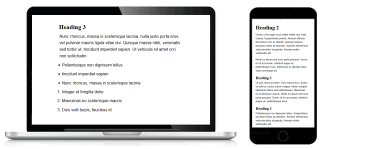
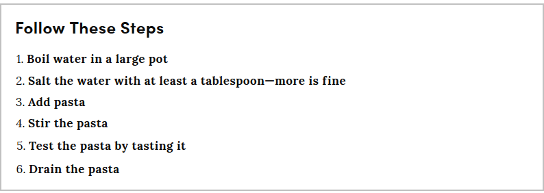
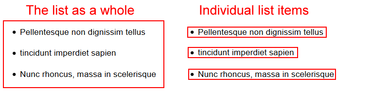
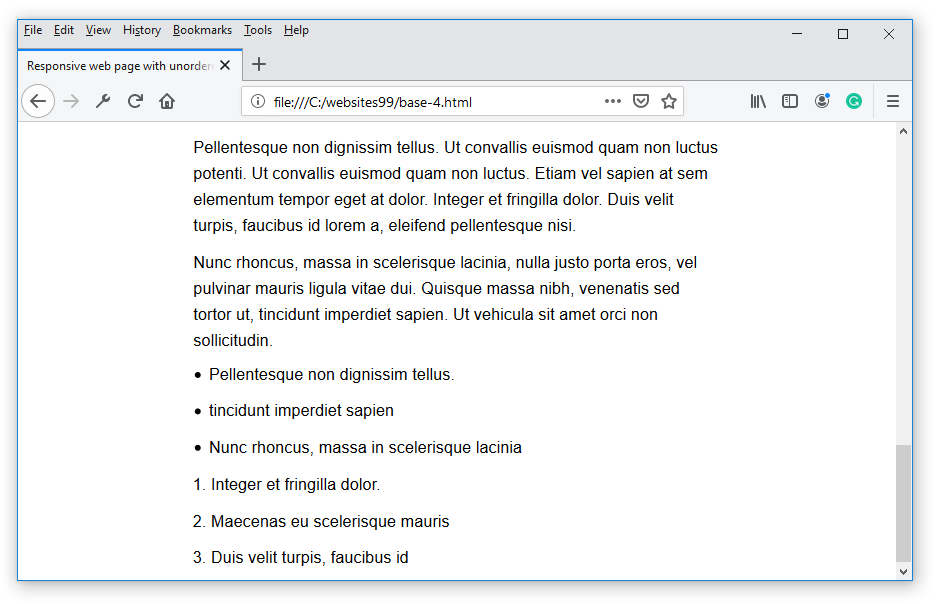
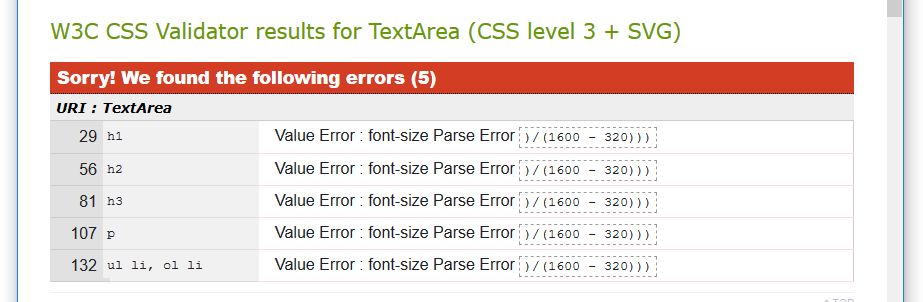
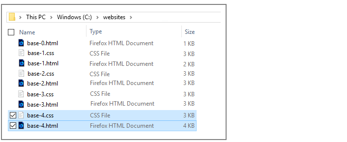

Learning Goals
At the end of this Lesson you will be able to:
- Mark-up content in an HTML file as bullet points in unordered and ordered lists.
- Create responsive styles in CSS to display unordered and ordered lists in web pages.
You can view a finished version of this exercise by clicking the image below.

About lists and bullets
Lists of bulleted items are commonly used in web pages to make text easier-to-read and instructions easier-to-follow.
You can create two types of lists in HTML:
- Unordered lists: You use these when the reading order is not important. The bullet character is typically a dot, a circle or a square.

- Ordered lists: You use these when the order of reading is important. For example, in recipes or other directions and instructions. HTML will automatically assign a sequentially increasing number to each item in the list.

The two parts of a list
In HTML, you can think of any list as containing two parts: the list as a whole, and the individual items in the list.

- The list as a whole: A pair of outer opening and closing tags marks the beginning and the end of every list. This pair of tags also specifies whether the list is an unordered or an ordered one.
An unordered list begins and ends as shown below. The letters ‘ul’ stands for unordered list.
<ul>
<li>Pellentesque non dignissim tellus</li>
<li>Ut convallis euismod quam non luctus</li>
</ul>
An ordered list begins and ends as follows. The ‘ol’ stands for ordered list.
<ol>
<li>Pellentesque non dignissim tellus</li>
<li>Ut convallis euismod quam non luctus</li>
</ol>
- The individual items in the list: Each of these could be a single word or a larger block of text.
For both unordered and ordered lists, every individual list item is wrapped inside the same pair of opening and closing tags. The ‘li’ stands for list item.
<li>Pellentesque non dignissim tellus</li>
<li>Ut convallis euismod quam non luctus</li>
Your two work files: base-4.html and base-4.css
In this Lesson you will work with these two files:
- The web page named base-4.html. This is a copy of the base-3.html file from the previous Lesson.
- The stylesheet named base-4.css. This is a copy of the base-3.css file, also from the previous Lesson.
First, let’s edit the HTML file from your previous Lesson:
- In your text editor, open the file named base-3.html.
- Use the File | Save As command to save your base-3.html file with this new name:
base-4.html
You can now make changes to this new base-4.html file without affecting the base-3.html file from your previous exercise.
- In the <head> of your new base-4.html file, change the title as follows:
<title>Responsive web page with unordered and ordered lists</title>
- Also in the <head>, change the description as follows:
<meta name="description" content="A sample responsive web page with examples of unordered and ordered lists.">
- And finally in <head>, change the stylesheet link as follows:
<link rel="stylesheet" href="base-4.css">
- You are now finished making changes to your base-4.html file.
Save the file with the File | Save command. Or press the Ctrl key (Windows) or Command ⌘ key (Apple) and press the s (for Save) key.
- Switch to the base-3.css file, and use the File | Save As command to save the file with this new name:
base-4.css
You are now ready to work with your new web page (base-4.html) and stylesheet (base-4.css).
Adding sample bullet text to your web page
In your base-4.html file, add the following new content at the bottom of the web page, just before the closing </body> tag.
<ul>
<li>Pellentesque non dignissim tellus</li>
<li>tincidunt imperdiet sapien</li>
<li>Nunc rhoncus, massa in scelerisque lacinia</li>
</ul>
<ol>
<li>Integer et fringilla dolor</li>
<li>Maecenas eu scelerisque mauris</li>
<li>Duis velit turpis, faucibus id</li>
</ol>
Adding bullet styles to your stylesheet
As with other elements of a web page, such as headings and text paragraphs, web browsers apply default styles to unordered and ordered lists.
However, because you have reset all default styles at the beginning of your stylesheet, you will need to add styles of your own for lists to display correctly.
In your base-4.css file, add the following new CSS styles at the bottom of the stylesheet, after the paragraph text styles.
ul li, ol li {
font-family: sans-serif;
font-weight: normal;
font-size: calc(15px + (18 - 15) * ((100vw - 320px) / (1600 - 320)));
}
@media all and (max-width:767px) {
ul, ol { margin-left: 5% }
ul li, ol li {
line-height: 1.5;
margin-bottom: 5%;
}
}
@media all and (min-width:768px) {
ul, ol { margin-left: 2% }
ul li, ol li {
line-height: 1.6;
margin-bottom: 2%;
}
}
Save your HTML and CSS files.
Reload your base-4.html file in your web browser. It should now look as shown below.

Updating the <head> of your web page
Before you validate your web page and upload it to GitHub, ensure the following details are correct within the <head> of your base-4.html file.
- You have replaced the name ‘Mary Smith’ with your own name.
- You have replaced the sample Google Tracking ID with your own Google Tracking ID. The instructions for viewing your website’s unique Google Tracking ID are here.

Validating your web page
To check the HTML in your web page is correct or valid, use the official W3C Markup Validation Service as follows.
- Go to this web page: https://validator.w3.org.
- Click the Validate by Direct Input tab.

- Select your entire HTML file (both <head> and <body>), and copy-and-paste it into the box named Enter the Markup to validate.

- Click the Check button.
- If you see any errors, return to your base-4.html file in your text editor, fix the errors, save the file, and copy-and-paste the entire file again.
In the HTML Validator, click the Back button of your web browser to again display the Validate by Direct Input tab. Click once in the tab and paste in your corrected HTML file. Your new, pasted-in file will replace the earlier version. Finally, click the Check button.
Validating your stylesheet
To check your CSS is correct, use the official W3C CSS Validation Service. Follow these steps.
- Go to this web page: https://jigsaw.w3.org/css-validator.
- Click the By direct input tab.

- Copy and paste your CSS file into the box named Enter the CSS you would like validated.
- Click the Check button.
- If you see any errors (other than those related to the fluid typographic equation, as shown below), return to your base-4.css file in your text editor, fix the errors, save the file, and copy the entire file again.

- In the CSS Validator, click the Back button of your web browser to again display the By direct input tab. Click once in the tab and paste in your corrected CSS file. Your new, pasted-in file will replace the earlier version. Finally, click the Check button.
Uploading your two files to GitHub
After validating your web page and stylesheet, you are now ready to upload them to your account on GitHub.
- Sign in to your account at GitHub.com. At the left of the screen, you can see a list of your repositories.

- On your GitHub home page, click the name of the repository that holds your web pages. Its name will look as follows, where username is your chosen username on GitHub.
username.github.io

- On the next screen displayed, near the centre of the screen, click the Upload files button.

- Select or drag-and-drop the two files base-4.html and base-4.css to upload them to your GitHub account.

- After uploading your files, scroll down to the bottom of the screen, enter a short message in the Commit changes box and click the Commit changes button.
Your web page is now published on GitHub at a web address similar to the following, where username is the username you have chosen for your GitHub account:
https://username.github.io/base-4.html
It may take a few minutes for your uploaded files to appear on GitHub.